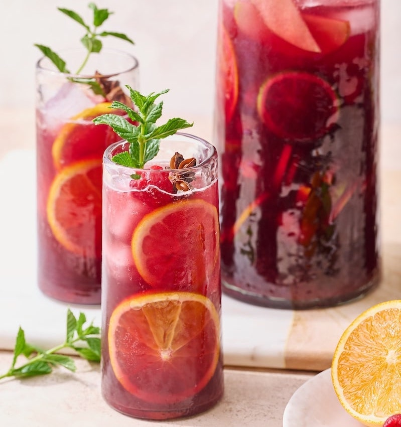

Sangria first made an appearance in the Ancient Roman times. Alcohol, such as wine, was mixed with water as it could be used to kill off bacteria. People soon began adding spices to the mix to cover the taste of the wine but it made the mixture worse. This was called "Hippocras" and was sometimes heated, similar to modern mulled wine. The word Sangria comes from the Spanish word for blood, sangre, due to the colour. Sangria continued to grow in popularity until 711 when the Islamic Moors conquered the peninsula. The drink then didn't return until the Moors' rule ended in 1492. In the 1700s and 1800s, a style of Sangria was made in England and France using French grapes. The drink took many forms and has flashes of popularity in the US in Spanish restaurants. Today under european law Sangria must be maid in Spain or Protugal and have less than 12% alcohol by volume.
Add chopped fruit into a bowl and sprinkle the sugar and cinnamon over the top and stir to coat. Cover the bowl and leave in the fridge to macerate for at least 1 hour (preferably over night). Fill a large jug with ice. Stir the macerated fruit to ensure all sugar has dissolved. Tip the fruit mix into the jug and then add the wine and brandy. Stir then top up with sparkling water. Garnish with an orange wedge.